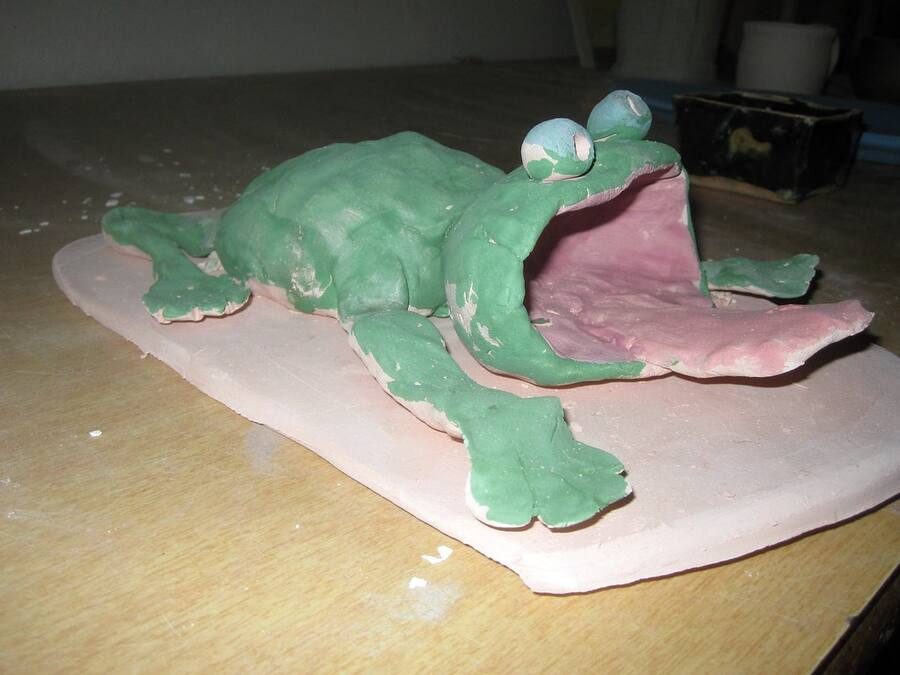
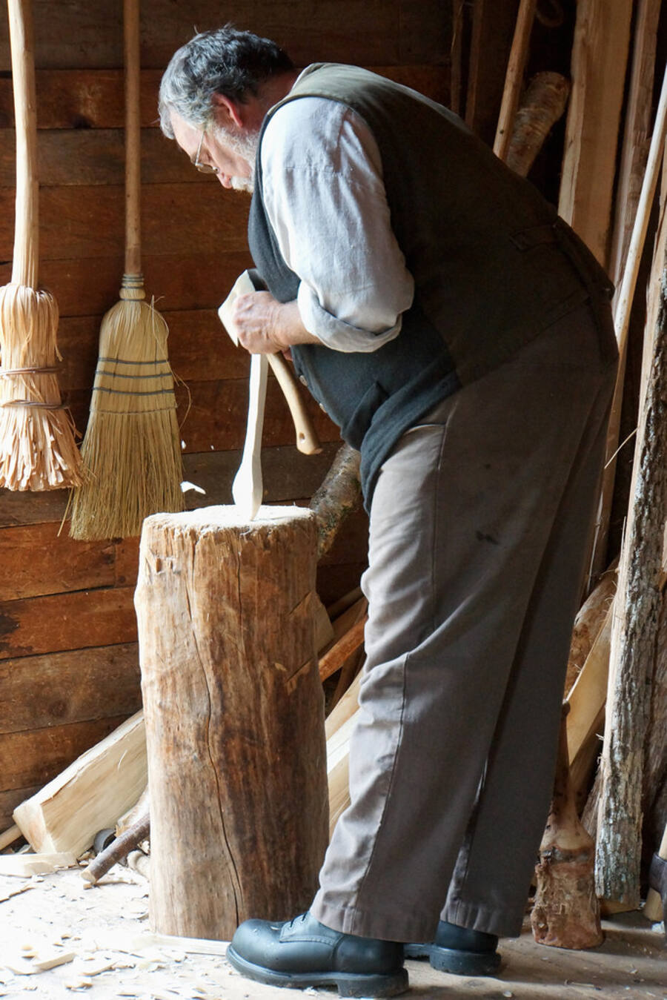
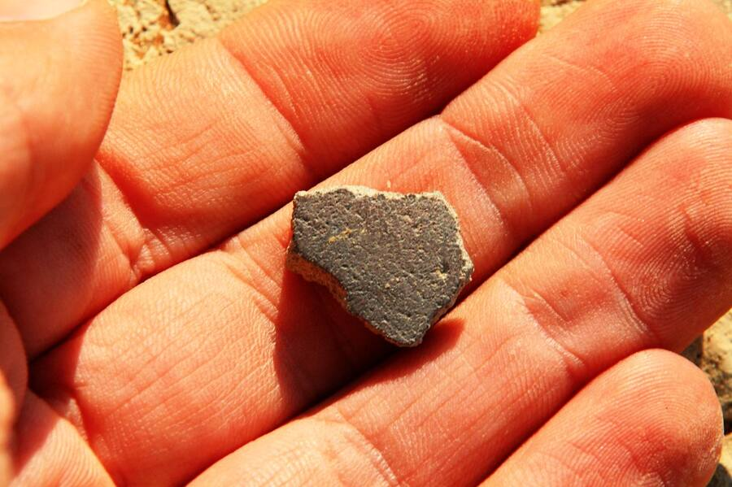
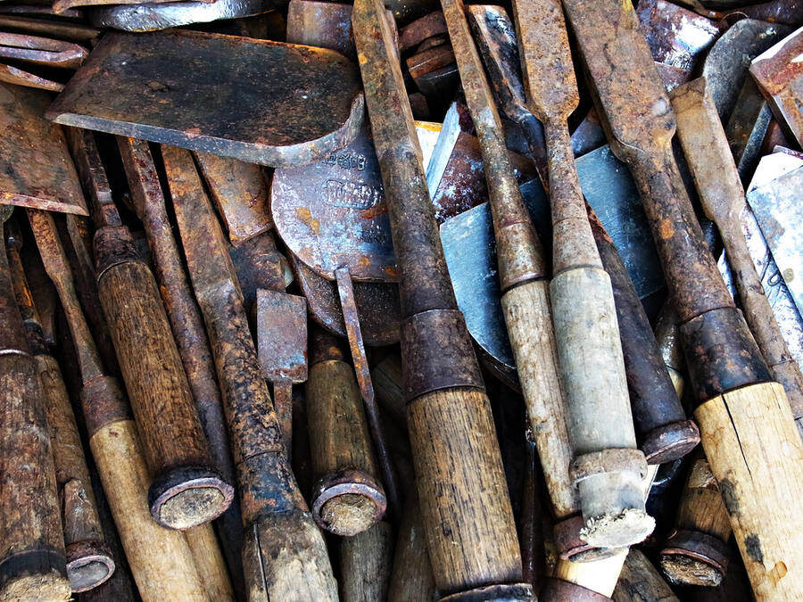
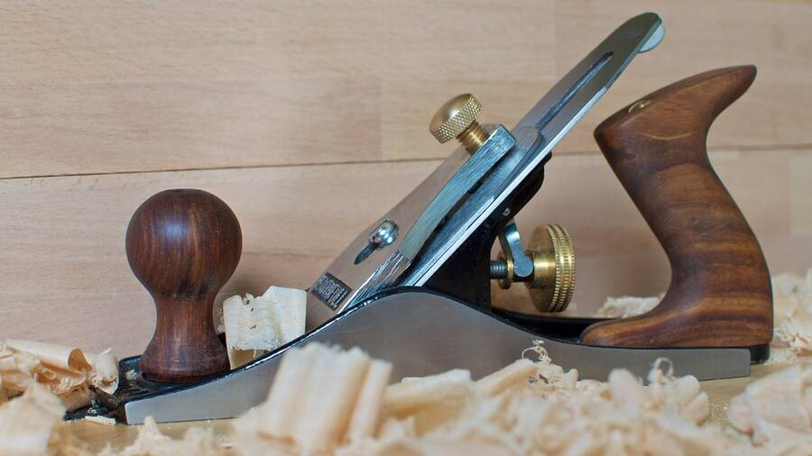

The Blueprint Studio
A ceramics studio firing wood kilns in a riverside warehouse — every piece drawn before it is made.
A ceramics studio firing wood kilns in a riverside warehouse — every piece drawn before it is made.

Centred, opened, pulled. The wall thickness is measured with calipers.

Handles, spouts, lids. Each piece is trimmed and signed on the foot.

Wood kiln, 48 hours, 1280°C. The flame decides the glaze.
Studio visits: Saturdays, 10–12.
Workshops: first Sunday of the month.
Commissions: 4–6 weeks.
Can I watch a firing?
Yes — the kiln is loaded on Friday evening. Bring a coat.
Do you ship?
Yes, within the EU, in straw and cardboard.
What if my piece cracks?
It happens. We will replace it or refund you, your choice.
Can I use the studio?
Members get 24-hour access. The kiln is by arrangement.

Calipers — wall 4mm
Plane — for the bench, not the potsOne day, one wheel, one bag of clay. You will leave with a cup and a callus.
Book a session